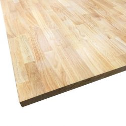

Wij kiezen bewust voor lokale en verantwoorde materialen die garant staan voor kwaliteit, duurzaamheid en een
prachtige uitstraling.
Berken Multiplex

Berken multiplex is een stabiele en sterke plaat, zeer geschikt voor kasten en dragende constructies. Het
heeft een lichte, egale kleur en is afkomstig uit duurzaam beheerde bossen.
- Sterk en stabiel
- Licht van kleur
- Ideaal voor meubelbouw
Grenen Multiplex

Grenen multiplex is een budgetvriendelijk alternatief met een karakteristieke houtnerf. Het is gemakkelijk te
bewerken en perfect voor interieurtoepassingen waar een warmere uitstraling gewenst is.
- Betaalbaar
- Warme, natuurlijke uitstraling
- Veelzijdig in gebruik
Berk laminaat

Dit materiaal combineert de stabiliteit van een dragerplaat met een duurzame toplaag in berkenlook. Het is
krasbestendig en onderhoudsvriendelijk, vaak gebruikt voor werkbladen en keukens.
- Kras- en slijtvast
- Onderhoudsvriendelijk
- Geschikt voor intensief gebruik
Rubberwood

Rubberwood is een ecologisch verantwoorde hardhoutsoort, afkomstig van bomen die geen latex meer produceren.
Het is dicht, heeft een fijne nerf en is uitstekend geschikt voor tafels en meubelpoten.
- Ecologisch verantwoord
- Dicht en duurzaam
- Fijne, egale nerfstructuur
Binderhout

Binderhout, vaak gemaakt van vuren of grenen, wordt gebruikt voor de binnenconstructies en verstevigingen die
niet in het zicht komen. Het is essentieel voor de stevigheid van kasten en wanden.
- Essentieel voor constructie
- Zeer stabiel
- Gebruikt als binnenskelet